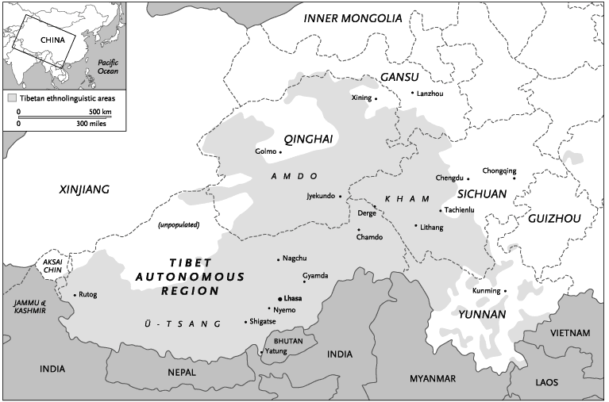
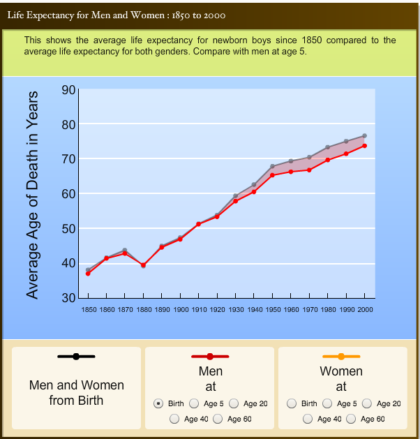

September 2015, Toronto
Reading time: Less than 10 minutes
This will be a short post about the fourteen Dalai Lamas. His Holiness the 14th Dalai Lama recently celebrated his 80th birthday. The follow up to this celebration was did the other past Dalai Lamas live as long? We will dive straight into our dataset to look into the birth places and ages of the past 13 Dalai Lamas.
Before reading further, please note Tibet's past and present geography. Tibet has been historically divided into three main regions (U-Tsang, Amdo and Kham). Under the authoritarian Chinese regime, Tibet has been split into different regions, mainly Tibet Autonomous Region (TAR), Sichuan and Qinghai. The map below depicts both the past and present-day regions. I will use the past historical classification (Amdo, Kham and U-Tsang) for this analysis.

Tibet's three main regions along with present day Chinese regions [Source]
Time to dig into the dataset and plot it. This is what we get.
The graph shows that the first Dalai Lama has lived the longest. He was born in 1391 and died in 1474. Although the data source is derived from the Wikipedia page, I also referred to Shakabpa's book, Tibet, A Political History. He also quotes the first Dalai Lama's age at 84. He does mention in the footnote that two other books quote the age at 82. Regardless, 82 years is still remarkably long for someone born in the late fourteenth century. This mapping history initiative [image shown below] by University of Oregon begins at 1850 and even then the average life expectancy for someone at 1850 is under 40 years old. It should be noted that this life expectancy is based on men at birth and if they did live until 60, the maximum life expectancy was around 72 years old at 1850. What we do know for a fact is the first Dalai Lama received teachings directly from Tsongkhapa, founder of Gelugpa-sect. He founded the Tashi Lhunpo monastery in Shigaste (western Tibet) and was also called Panchen Gedun Druppa.

Life Expectancy beginning at 1850 [Source]
Another interesting argument we could make based on this age graph is that the more powerful Dalai Lamas lived a longer life. The fifth Dalai Lama was considered one of the most important rulers in Tibet's history. The reign of the fourth and fifth Dalai Lamas were the time of religious wars with different regional rulers (Beri, U, Tsang, Kham) siding with their respective sects/religion (Gelug-pa, Kagyu-pa, Bon, etc.). Ngawang Lobsang Gyatso, the fifth Dalai Lama successfully got many of the regions under his control with help from Gusri Khan and Desi Sonam Chospel. This "Desi" title was equivalent to that of a prime minister and for the first time, the Dalai Lama had become the temporal and spiritual leader of Tibet (although all the political matters were handled by Desi).
The 13th and 14th Dalai Lamas lives are well-documented to understand the challenges faced by them. The corallary to the above paragraph is the weaker Dalai Lamas, especially from 8th-12th did not live very long. [More info needed here.]
Reincarnation in exile is a stretch These regions were most likely under the influence of the Mongols and Dalai Lamas during these two periods.
Mongolia background:
The second Dalai Lama, Gedun Gyatso, founded the monastery of Chokhorgyal in 1509 (about 90 miles southeast of Lhasa). There is a lake nearby whose reflections are reputed to prophesy future events and led to discoveries of the 13th and 14th incarnations of Dalai Lama. The title of Dalai Lama was given to the third Dalai Lama, Sonam Gyatso by Altan Khan of Tumat Mongols in 1578. On his journey back to Lhasa from Mongolia, the third Dalai Lama visited Kokonor (built a monastery there as it was Tsongkhapa's birth place) and the region of Kham (including Lithang and Chamdo). Altan Khan passed away and the third Dalai Lama went to Mongolia and lived there for two years. He passed away at the start of his journey back to Tibet. Not surprisingly, the fourth Dalai Lama was born in Mongolia. This led to a close spiritual relationship between Mongolia and TIbet and the Gelug-pa sect emerged as the stronger group. The Sakya-pa sect, whose influence dated from the time of Sakya Pandita, began to wane. Another interesting fact to note is that Yonten Gyatso, the fourth Dalai Lama, was tutored by Lobsang Chosang from Tashi Lhunpo monastery. He received the title of Panchen Lama (meaning "Great Scholar"). Since then, his reincarnations have been known as Panchen Lama.
Arunachal Pradesh, India:
Tsangyang Gyatso, the sixth Dalai Lama was born in Tawang town, present-day Arunachal Pradesh in India. It would not be surprising to see if this region was in fact under Tibet's rule back then as the majority of the residents there are devout Buddhists and speak fluent Tibetan.[source???] Shakabpa's book mentions that Sangye Gyatso had become the Desi during the fifth Dalai Lama's reign and concealed the Dalai Lama's death for a period of fifteen years. The explanation given to the officials and subjects then was that the Dalai Lama had gone into meditation for an indefinite period and could not be disturbed.
Desi Sangye Gyatso was an excellent administrator (and a powerful one) but had trouble with the sixth Dalai Lama who wanted to renounce his monastic vows. During this period, Sangye Gyatso was forced to resign and ultimately killed by Lhazang Khan's men. Lhazang Khan deposed the sixth Dalai Lama and sent him into exile. Tsangyang Gyatso is believed to have died in the Kokonor region. Lhazang Khan then announced the sixth Dalai Lama was not the true reincarnation and appointed Nawang Yeshe Gyatso as the true rebirth and enthroned him in Potala as the "real" sixth Dalai Lama. However, the Tibetans never accepted it and when there were reports of the reincarnation of the sixth Dalai Lama in Lithang. Certain Mongol tribes sympathetic of the sixth Dalai Lama heard of this discovery and decided to offer the boy recognition and protection. The boy was escorted from Derge to the Kokonor region where he was warmly received by the Mongols. Even the Manchus saw this as an opportunity to extend their influence and sent their representative! Is history repeating itself again?
I have listed below some of the interesting facts based on Shakabpa's book. Note that Shakabpa was a finance minister and hence the member of the ruling elites when Tibet lost its independence. Therefore, even though it helps us peek into the minds of the ruling elites (or at least revisionist history), one has to take a critical approach and recognize this important bias when reading the book. I do think the book does a good job of covering the Tibet's past history (including the Dalai Lamas).
These questions are not for us Tibetans to make judgements about our past. In fact, one should learn and analyze these facts critically so we do not repeat them again. We have paid a great price by losing our nation and Tibetans inside Tibet continue to suffer under the authotarian Chinese regime. If we fail to learn from our past again, we are bound to pay a greater price and that is something we cannot afford to do.
Data:
Download the excel file here (updated as of May 22, 2015).{kind=link}